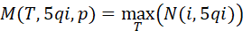
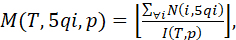
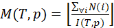
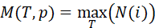
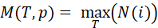

| 3GPP TS 38.314 V17.5.0 (2024-03) | |
|---|---|
| Technical Specification|Report | |
3rd Generation Partnership Project; Technical Specification Group Radio Access Network; NR; Layer 2 Measurements; (Release 17) |
|
| The present document has been developed within the 3rd
Generation Partnership Project (3GPP TM) and may be further
elaborated for the purposes of 3GPP. The present document has not been subject to any approval process by the 3GPP Organizational Partners and shall not be implemented. This Specification is provided for future development work within 3GPP only. The Organizational Partners accept no liability for any use of this Specification. Specifications and Reports for implementation of the 3GPP TM system should be obtained via the 3GPP Organizational Partners' Publications Offices. |
|
|
Copyright Notification No part may be reproduced except as authorized by written
permission. © 2024, 3GPP Organizational Partners (ARIB, ATIS, CCSA, ETSI, TSDSI, TTA, TTC). All rights reserved. UMTS™ is a Trade Mark of ETSI registered for the benefit of its members 3GPP™ is a Trade Mark of ETSI registered for the benefit of its
Members and of the 3GPP Organizational Partners GSM® and the GSM logo are registered and owned by the GSM Association |
Foreword 5
1 Scope 6
2 References 6
3 Definitions of terms, symbols and abbreviations 6
3.1 Terms 6
3.2 Abbreviations 6
4 Layer 2 measurements 6
4.1 General 6
4.2 NR measurements performed by the gNB 7
4.2.1 Measurements valid for all gNB deployment scenarios 7
4.2.1.1 Received Random Access Preambles 7
4.2.1.1.1 Received Random Access Preambles per cell 7
4.2.1.1.1a Received 4-step Random Access Preambles per cell 7
4.2.1.1.1b Received 2-step Random Access Preambles per cell 7
4.2.1.1.2 Received Random Access Preambles per SSB 8
4.2.1.1.2a Received 4-step Random Access Preambles per SSB 8
4.2.1.1.2b Received 2-step Random Access Preambles per SSB 8
4.2.1.2 Packet delay 9
4.2.1.2.1 General 9
4.2.1.2.2 Average over-the-air interface packet delay in the UL per DRB per UE 10
4.2.1.2.3 Average RLC packet delay in the UL per DRB per UE 10
4.2.1.2.4 Average PDCP re-ordering delay in the UL per DRB per UE 11
4.2.1.3 Number of active UEs in RRC_CONNECTED 11
4.2.1.3.1 General 11
4.2.1.3.2 Mean number of Active UEs in the DL per DRB per cell 11
4.2.1.3.3 Max number of Active UEs in the DL per DRB per cell 12
4.2.1.3.4 Mean number of Active UEs in the UL per DRB per cell 13
4.2.1.3.5 Max number of Active UEs in the UL per DRB per cell 13
4.2.1.3.6 Mean number of Active UEs per cell 14
4.2.1.3.7 Max number of Active UEs per cell 15
4.2.1.3.8 Mean number of Active UEs per DRB per cell 15
4.2.1.3.9 Max number of Active UEs per DRB per cell 16
4.2.1.4 Number of stored inactive UE contexts 17
4.2.1.4.1 General 17
4.2.1.4.2 Mean number of stored inactive UE contexts 17
4.2.1.4.3 Max number of stored inactive UE contexts 18
4.2.1.5 Packet Loss Rate 18
4.2.1.5.1 Packet Uu Loss Rate in the DL per DRB per UE 18
4.2.1.5.2 Packet Uu Loss Rate with delay threshold in the DL per DRB per UE 19
4.2.1.6 Other measurements defined in TS 28.552 [2] 20
4.2.1.7.3 PDSCH PRB Usage based on statistical MIMO layer in the DL per cell 22
4.2.1.7.4 PUSCH PRB Usage based on statistical MIMO layer in the UL per cell 23
4.2.1.7.5 Enhanced PDSCH PRB Usage for MIMO in the DL per cell 24
4.2.1.7.6 Enhanced PUSCH PRB Usage for MIMO in the UL per cell 25
4.2.1.8 Number of PDCP Packets in Split-DRB Scenario 26
4.2.1.8.1 Number of PDCP Non-duplicated Packets per cell group per Split-DRB per UE 26
4.2.1.8.2 Number of PDCP duplicated Packets per Split-DRB per UE 26
4.2.1.9 Total RAN Delay in Split-DRB Scenario 27
4.2.1.9.1 DL Delay Calculation per Split-DRB per UE when PDCP duplication is enabled for entire measurement period 27
4.2.1.9.2 UL Delay Calculation per Split-DRB per UE when PDCP duplication is enabled for entire measurement period 27
4.2.1.9.3 DL Delay Calculation per Split-DRB per UE when PDCP duplication is not enabled for entire measurement period 28
4.2.1.9.4 UL Delay Calculation per Split-DRB per UE when PDCP duplication is not enabled for entire measurement period 29
4.3 NR measurements performed by the UE 30
4.3.1 Packet delay 30
4.3.1.1 UL PDCP Packet Average Delay per DRB per UE 30
4.3.1.2 UL PDCP Excess Packet Delay per DRB 30
4.3.1.2.1 Measurement report mapping for PDCP Excess Packet Delay 31
Annex A (informative): Change history 33
This Technical Specification has been produced by the 3rd Generation Partnership Project (3GPP).
The contents of the present document are subject to continuing work within the TSG and may change following formal TSG approval. Should the TSG modify the contents of the present document, it will be re-released by the TSG with an identifying change of release date and an increase in version number as follows:
Version x.y.z
where:
x the first digit:
1 presented to TSG for information;
2 presented to TSG for approval;
3 or greater indicates TSG approved document under change control.
y the second digit is incremented for all changes of substance, i.e. technical enhancements, corrections, updates, etc.
z the third digit is incremented when editorial only changes have been incorporated in the document.
The present document contains the description and definition of the measurements performed by network or the UE that are transferred over the standardised interfaces in order to support NR radio link operations, radio resource management (RRM), network operations and maintenance (OAM), minimization of drive tests (MDT) and self-organising networks (SON).
Only the differences relative to TS 28.552 v16.2.0 [2] are specified in this specification.
The following documents contain provisions which, through reference in this text, constitute provisions of the present document.
- References are either specific (identified by date of publication, edition number, version number, etc.) or non‑specific.
- For a specific reference, subsequent revisions do not apply.
- For a non-specific reference, the latest version applies. In the case of a reference to a 3GPP document (including a GSM document), a non-specific reference implicitly refers to the latest version of that document in the same Release as the present document.
[1] 3GPP TR 21.905: "Vocabulary for 3GPP Specifications".
[2] 3GPP TS 28.552: "5G performance measurements".
[3] 3GPP TS 38.331: "Radio Resource Control (RRC) protocol specification".
[4] 3GPP TS 23.501: "System Architecture for the 5G System; Stage 2".
For the purposes of the present document, the terms given in TR 21.905 [1] and the following apply. A term defined in the present document takes precedence over the definition of the same term, if any, in TR 21.905 [1].
For the purposes of the present document, the abbreviations given in TR 21.905 [1] and the following apply. An abbreviation defined in the present document takes precedence over the definition of the same abbreviation, if any, in TR 21.905 [1].
All the per DRB per cell measurements and per DRB per UE measurements can be aggregated into per QoS level per cell and per PLMN ID per cell by network implementation. All the performance measurements for gNB defined in TS 28.552 [2] 5.1 can be calculated into per PLMN ID level by network implementation. Per QoS level refers to per mapped 5QI for NR SA or per QCI for EN-DC.
A use case for this measurement is RACH configuration optimization, where Received Random Access Preambles is signalled across an OAM interface.
Protocol Layer: MAC
Table 4.2.1.1.1-1: Definition for Received Random Access Preambles per cell
| Definition | Received Random Access Preambles per cell. This measurement is applicable to PRACH. The reference point is the Service Access Point between MAC and L1. The measured quantity is the number of received Random Access preambles during a time period over all PRACHs configured in a cell. The measurement is done separately for: - Dedicated preambles - Randomly selected preambles in the low range - Randomly selected preambles in the high range. The unit of the measured value is [/s]. |
|---|
A use case for this measurement is RACH configuration optimization, where Received Random Access Preambles is signalled across an OAM interface.
Protocol Layer: MAC
Table 4.2.1.1.1a-1: Definition for Received 4-step Random Access Preambles per cell
| Definition | Received 4-step Random Access Preambles per cell. This measurement is applicable to PRACH. The reference point is the Service Access Point between MAC and L1. The measured quantity is the number of received Random Access preambles of 4-step RA attempts during a time period over all PRACHs configured in a cell. The measurement is done separately for: - Dedicated preambles - Randomly selected preambles in the low range - Randomly selected preambles in the high range. The unit of the measured value is [/s]. |
|---|
A use case for this measurement is RACH configuration optimization, where Received Random Access Preambles is signalled across an OAM interface.
Protocol Layer: MAC
Table 4.2.1.1.1b-1: Definition for Received 2-step Random Access Preambles per cell
| Definition | Received 2-step Random Access Preambles per cell. This measurement is applicable to PRACH. The reference point is the Service Access Point between MAC and L1. The measured quantity is the number of received Random Access preambles of 2-step RA attempts during a time period over all PRACHs configured in a cell. The measurement is done separately for: - Dedicated preambles - Randomly selected preambles in the low range - Randomly selected preambles in the high range. The unit of the measured value is [/s]. |
|---|
A use case for this measurement is RACH configuration optimization, where Received Random Access Preambles is signalled across an OAM interface.
Protocol Layer: MAC
Table 4.2.1.1.2-1: Definition for Received Random Access Preambles per SSB
| Definition | Received Random Access Preambles per SSB. This measurement is applicable to PRACH. The reference point is the Service Access Point between MAC and L1. The measured quantity is the number of received Random Access preambles during a time period over all PRACHs configured in the SSB of the cell. The measurement is done separately for: - Dedicated preambles - Randomly selected preambles in the low range - Randomly selected preambles in the high range. The unit of the measured value is [/s]. |
|---|
A use case for this measurement is RACH configuration optimization, where Received Random Access Preambles is signalled across an OAM interface.
Protocol Layer: MAC
Table 4.2.1.1.2a-1: Definition for Received 4-step Random Access Preambles per SSB
| Definition | Received 4-step Random Access Preambles per SSB. This measurement is applicable to PRACH. The reference point is the Service Access Point between MAC and L1. The measured quantity is the number of received Random Access preambles of 4-step RA attempts during a time period over all PRACHs configured in the SSB of the cell. The measurement is done separately for: - Dedicated preambles - Randomly selected preambles in the low range - Randomly selected preambles in the high range. The unit of the measured value is [/s]. |
|---|
A use case for this measurement is RACH configuration optimization, where Received Random Access Preambles is signalled across an OAM interface.
Protocol Layer: MAC
Table 4.2.1.1.2b-1: Definition for Received 2-step Random Access Preambles per SSB
| Definition | Received 2-step Random Access Preambles per SSB. This measurement is applicable to PRACH. The reference point is the Service Access Point between MAC and L1. The measured quantity is the number of received Random Access preambles of 2-step RA attempts during a time period over all PRACHs configured in the SSB of the cell. The measurement is done separately for: - Dedicated preambles - Randomly selected preambles in the low range - Randomly selected preambles in the high range. The unit of the measured value is [/s]. |
|---|
Packet delay includes RAN part of delay and CN part of delay.
The RAN part of DL packet delay measurement comprises:
- D1 (DL delay in over-the-air interface), referring to Average delay DL air-interface in TS 28.552 [2] 5.1.1.1.1.
- D2 (DL delay on gNB-DU), referring to Average delay in RLC sublayer of gNB-DU in TS 28.552 [2] 5.1.3.3.3.
- D3 (DL delay on F1-U), referring to Average delay on F1-U in TS 28.552 [2] 5.1.3.3.2.
- D4 (DL delay in CU-UP), referring to Average delay DL in CU-UP in TS 28.552 [2] 5.1.3.3.1.
The DL packet delay measurements, i.e. D1 (the DL delay in over-the-air interface ), D2 (the DL delay in gNB-DU), D3 (the DL delay on F1-U) and D4 (the DL delay in CU-UP), should be measured per DRB per UE.
NOTE: The delay measurements D1, D2 and D4 are also applicable for EUTRA in case of EN-DC related DL delay measurements on the MN side.
The RAN part (including UE) of UL packet delay measurement comprises:
- D1 (UL PDCP packet average delay, as defined in clause 4.3.1.1).
- D2.1 (average over-the-air interface packet delay, as defined in 4.2.1.2.2).
- D2.2 (average RLC packet delay, as defined in 4.2.1.2.3).
- D2.3 (average delay UL on F1-U, it is measured using the same metric as the average delay DL on F1-U defined in TS 28.552 [2] clause 5.1.3.3.2).
- D2.4 (average PDCP re-ordering delay, as defined in 4.2.1.2.4).
The UL packet delay measurements, i.e. D1(UL PDCP packet average delay), D2.1(average over-the-air interface packet delay), D2.2(average RLC packet delay), D2.3(average delay UL on F1-U) and D2.4(average PDCP re-ordering delay), should be measured per DRB per UE. The unit of D1, D2.1, D2.2, D2.3 and D2.4 is 0.1ms.
NOTE: The delay measurements D1, D2.1, D2.2 and D2.4 are also applicable for EUTRA in case of EN-DC related UL delay measurements on the MN side.
For non CU-UP and DU split case, RAN part of packet delay excludes the delay at FI-U interface, i.e. D2.3 and D3.
For split-DRB scenario, total UL/DL delay on the MCG or on the SCG is calculated based on the above measurement definitions. For UL delay calculation, the D1 measurement is the same for total UL delay on the MCG and total UL delay on the SCG.
If network disables the PDCP re-ordering function, the value of Average PDCP re-ordering delay i.e. D2.4 should be set to 0.
For the QoS monitoring in TS 23.501 [4], RAN informs the RAN part of UL packet delay measurement, or the RAN part of DL packet delay measurement, or both to the CN.
The objective of this measurement is to measure air interface UL packet delay for OAM performance observability or for QoS verification of MDT or for the QoS monitoring as defined in TS 23.501 [4].
Protocol Layer: MAC
Table 4.2.1.2.2-1: Definition for Average over-the-air packet delay in the UL per DRB per UE
| Definition | Average over-the-air packet delay in the UL per DRB per UE. This measurement is applicable for EN-DC and SA. This measurement refers to packet delay for DRBs. This measurement provides the average (arithmetic mean) time it takes to successfully receive a transport block from the time of UL transmission indicated in scheduling grant. Detailed Definition: \(M(T,drbid) = \left\lfloor \frac{\sum_{\forall i}^{}{tSucc(i,drbid) - tSched(i,drbid)}}{I(T)} \right\rfloor\), where explanations can be found in the table 4.2.1.2.2-2 below. |
|---|
Table 4.2.1.2.2-2: Parameter description for Average over-the-air packet delay in the UL per DRB per UE
| \[M(T,drbid)\] | Over-the-air packet delay in the UL per DRB per UE, averaged during time period \(T\). Unit: 0.1 ms. |
|---|---|
| \[tSched(i,drbid)\] | The point in time when the UL MAC SDU i is scheduled in MAC layer as per the scheduling grant provided. |
| \[tSucc(i,drbid)\] | The point in time when the UL MAC SDU i is successfully sent to RLC. |
| \[i\] | A UL MAC SDU that arrives at the MAC during time period \(T\). |
| \[I(T)\] | Total number of UL MAC SDUs \(i\). |
| \[T\] | Time Period during which the measurement is performed |
| \[drbid\] | The identity of the measured DRB. |
The objective of this measurement is to measure RLC delay in the UL for OAM performance observability or for QoS verification of MDT or for the QoS monitoring as defined in TS 23.501 [4].
Protocol Layer: RLC
Table 4.2.1.2.3-1: Definition for Average RLC packet delay in the UL per DRB per UE
| Definition | Average RLC delay in the UL per DRB per UE. This measurement is applicable for EN-DC and SA. This measurement refers to packet delay for DRBs. For CU-UP and DU split scenario or DC scenario, this measurement refers to the RLC delay on each DU or RAN node. This measurement provides the average (arithmetic mean) time it takes from the RLC PDU including the first part of an RLC SDU is received to the RLC SDU is sent to PDCP or CU-UP for split gNB. Detailed Definition: \(M(T,drbid) = \left\lfloor \frac{\sum_{\forall i}^{}{tSent(i,drbid) - tReceiv(i,drbid)}}{I(T)} \right\rfloor\), where explanations can be found in the table 4.2.1.2.3-2 below. |
|---|
Table 4.2.1.2.3-2: Parameter description for Average RLC packet delay in the UL per DRB per UE
| \[M(T,drbid)\] | RLC delay in the UL per DRB per UE, averaged during time period \(T\). Unit: 0.1 ms. |
|---|---|
| \[tReceiv(i,drbid)\] | The point in time when the UL RLC PDU including the first part of the UL RLC SDU i is received. |
| \[tSent(i,\ drbid)\] | The point in time when the UL RLC SDU i is sent to PDCP or CU-UP for split gNB. |
| \[i\] | A UL RLC SDU that is received by the RLC during time period \(T\). |
| \[I(T)\] | Total number of UL RLC SDUs \(i\). |
| \[T\] | Time Period during which the measurement is performed |
| \[drbid\] | The identity of the measured DRB. |
The objective of this measurement is to measure PDCP re-ordering delay in the UL for OAM performance observability or for QoS verification of MDT or for the QoS monitoring as defined in TS 23.501 [4].
Protocol Layer: PDCP
Table 4.2.1.2.4-1: Definition for Average PDCP re-ordering delay in the UL per DRB per UE
| Definition | Average PDCP re-ordering delay in the UL per DRB per UE. This measurement is applicable for EN-DC and SA. This measurement refers to packet delay for DRBs. This measurement provides the average (arithmetic mean) time it takes from the point a PDCP PDU is received to the PDCP SDU is sent to upper SAP. Detailed Definition: \(M(T,drbid) = \left\lfloor \frac{\sum_{\forall i}^{}{tSent(i,drbid) - tReceiv(i,drbid)}}{I(T)} \right\rfloor\), where explanations can be found in the table 4.1.1.2.4-2 below. |
|---|
Table 4.2.1.2.4-2: Parameter description for Average PDCP re-ordering delay in the UL per DRB per UE
| \[M(T,drbid)\] | PDCP re-ordering delay in the UL per DRB per UE, averaged during time period \(T\). Unit: 0.1 ms. |
|---|---|
| \[tReceiv(i,\ drbid)\] | The point in time when the UL PDCP PDU including the UL PDCP SDU i is received. |
| \[tSent(i,drbid)\] | The point in time when the UL PDCP SDU i is sent to upper SAP. |
| \[i\] | A UL PDCP SDU that is received by the PDCP during time period \(T\). |
| \[I(T)\] | Total number of UL PDCP SDUs received during time period \(T\). |
| \[T\] | Time Period during which the measurement is performed |
| \[drbid\] | The identity of the measured DRB. |
The objective of the measurement is to measure the number of active UEs per QoS level for OAM performance observability or for SON functions e.g., mobility load balancing. It is intended to be part of a calculation to determine the bitrate UEs achieve when they are active, i.e. when applications are transmitting and receiving data. The measurements are applicable for both non-split gNB and split gNB deployment scenario.
Protocol Layer: MAC, RLC
Table 4.2.1.3.2-1: Definition for Mean number of Active UEs in the DL per DRB per cell
| Definition | Mean number of Active UEs in the DL per DRB per cell. The DRBs are mapped with the same 5QI for NR SA or mapped with the same QCI for EN-DC. This measurement refers to UEs for which there is data available for transmission for the DL for DRBs. Detailed Definition: \(M(T,drbid,p) = \frac{\left\lfloor \frac{\sum_{\forall i}^{}{N(i,drbid)}}{I(T,p)}*10 \right\rfloor}{10}\), where explanations can be found in the table 4.2.1.3.2-2 below. |
|---|
Table 4.2.1.3.2-2: Parameter description for Mean number of Active UEs in the DL per DRB per cell
| \[M(T,drbid,p)\] | Mean number of Active UEs in the DL per DRB per cell, averaged during time period \(T\). Unit: 0.1. |
|---|---|
| \[N(i,drbid)\] | Number of UEs for which there is data available for transmission for the DL in MAC or RLC protocol layers for a Data Radio Bearer of traffic class at sampling occasion \(i\). Data available for transmission includes data for which HARQ transmission has not yet terminated. |
| \[i\] | Sampling occasion during time period \(T\). A sampling occasion shall occur once every \(p\) seconds. |
| \[p\] | Sampling period length. Unit: second. The sampling period shall be at most 0.1 s. |
| \[I(T,p)\] | Total number of sampling occasions during time period \(T\). |
| \[T\] | Time Period during which the measurement is performed, Unit: second. |
| \[drbid\] | The DRBs mapped with the same 5QI for NR SA or mapped with the same QCI for EN-DC. |
Protocol Layer: MAC, RLC
Table 4.2.1.3.3-1: Definition for Max number of Active UEs in the DL per DRB per cell
| Definition | Maximum number of Active UEs in the DL per DRB per cell. The DRBs are mapped with the same 5QI for NR SA or mapped with the same QCI for EN-DC. This measurement refers to UEs for which there is data available for transmission for the DL for DRBs. Detailed Definition: \(M(T,drbid,p) = \max_{T}\left( N(i,drbid) \right)\), where explanations can be found in the table 4.2.1.3.3-2 below. |
|---|
Table 4.2.1.3.3-2: Parameter description for Max number of Active UEs in the DL per DRB per cell
| \[M(T,drbid,p)\] | Maximum number of Active UEs in the DL per DRB per cell, averaged during time period \(T\). Unit: Integer. |
|---|---|
| \[N(i,drbid)\] | Number of UEs for which there is data available for transmission for the DL in MAC or RLC protocol layers for a Data Radio Bearer of traffic class at sampling occasion \(i\). Data available for transmission includes data for which HARQ transmission has not yet terminated. |
| \[i\] | Sampling occasion during time period \(T\). A sampling occasion shall occur once every \(p\) seconds. |
| \[p\] | Sampling period length. Unit: second. The sampling period shall be at most 0.1 s. |
| \[T\] | Time Period during which the measurement is performed, Unit: second. |
| \[drbid\] | The DRBs mapped with the same 5QI for NR SA or mapped with the same QCI for EN-DC. |
Protocol Layer: MAC
Table 4.2.1.3.4-1: Definition for Mean number of Active UEs in the UL per DRB per cell
| Definition | Mean number of Active UEs in the UL per DRB per cell. The DRBs are mapped with the same 5QI for NR SA or mapped with the same QCI for EN-DC. This measurement refers to UEs for which there is data available for transmission for the UL for DRBs. Detailed Definition: \(M(T,drbid,p) = \frac{\left\lfloor \frac{\sum_{\forall i}^{}{N(i,drbid)}}{I(T,p)}*10 \right\rfloor}{10},\ \)where explanations can be found in the table 4.2.1.3.4-2 below. |
|---|
NOTE: For this measurement, the expected accuracy is dependent on application scenario, cell load, UE configuration and how DRBs are distributed over logical channel groups.
Table 4.2.1.3.4-2: Parameter description for Mean number of Active UEs in the UL per DRB per cell
| \[M(T,drbid,p)\] | Mean number of Active UEs in the UL per DRB per cell, averaged during time period \(T\). Unit: 0.1. |
|---|---|
| \[N(i,drbid)\] | Number of UEs for which there is data available for transmission for the UL in MAC or RLC protocol layers for a Data Radio Bearer of traffic class at sampling occasion \(i\) This is a gNB estimation that is expected to be based on Buffer Status Reporting, provided configured grants and progress of ongoing HARQ transmissions (by including data for which HARQ transmission has not yet terminated). In addition, the gNB can use the analysis of received data in the estimation. In such case, when DRB cannot be determined at the time of the sampling occasion, gNB can determine DRB after successful reception of data. |
| \[i\] | Sampling occasion during time period \(T\). A sampling occasion shall occur once every \(p\) seconds. |
| \[p\] | Sampling period length. Unit: second. The sampling period shall be at most 0.1 s. |
| \[I(T,p)\] | Total number of sampling occasions during time period \(T\). |
| \[T\] | Time Period during which the measurement is performed, Unit: second. |
| \[drbid\] | The DRBs mapped with the same 5QI for NR SA or mapped with the same QCI for EN-DC. |
Protocol Layer: MAC
Table 4.2.1.3.5-1: Definition for Max number of Active UEs in the UL per DRB per cell
| Definition | Maximum number of Active UEs in the UL per DRB per cell. The DRBs are mapped with the same 5QI for NR SA or mapped with the same QCI for EN-DC. This measurement refers to UEs for which there is data available for transmission for the UL for DRBs. Detailed Definition: \(M(T,drbid,p) = \max_{T}\left( N(i,drbid) \right)\), where explanations can be found in the table 4.2.1.3.5-2 below. |
|---|
NOTE: For this measurement, the expected accuracy is dependent on application scenario, cell load, UE configuration and how DRBs are distributed over logical channel groups.
Table 4.2.1.3.5-2: Parameter description for Max number of Active UEs in the UL per DRB per cell
| \[M(T,drbid,p)\] | Maximum number of Active UEs in the UL per DRB per cell, averaged during time period \(T\). Unit: Integer. |
|---|---|
| \[N(i,drbid)\] | Number of UEs for which there is data available for transmission for the UL in MAC or RLC protocol layers for a Data Radio Bearer of traffic class at sampling occasion \(i\) This is a gNB estimation that is expected to be based on Buffer Status Reporting, provided configured grants and progress of ongoing HARQ transmissions (by including data for which HARQ transmission has not yet terminated). In addition, the gNB can use the analysis of received data in the estimation. In such case, when DRB cannot be determined at the time of the sampling occasion, gNB can determine DRB after successful reception of data. |
| \[i\] | Sampling occasion during time period \(T\). A sampling occasion shall occur once every \(p\) seconds. |
| \[p\] | Sampling period length. Unit: second. The sampling period shall be at most 0.1 s. |
| \[T\] | Time Period during which the measurement is performed, Unit: second. |
| \[drbid\] | The DRBs mapped with the same 5QI for NR SA or mapped with the same QCI for EN-DC. |
Protocol Layer: MAC, RLC
Table 4.2.1.3.6-1: Definition for Mean number of Active UEs per cell
| Definition | Mean number of Active UEs per cell. This measurement refers to UEs for which there is data available for transmission for the UL for DRBs, or there is data available for transmission for the DL for DRBs, or both. Detailed Definition: \(M(T,p) = \frac{\left\lfloor \frac{\sum_{\forall i}^{}{N(i)}}{I(T,p)}*10 \right\rfloor}{10},\ \)where explanations can be found in the table 4.2.1.3.6-2 below. |
|---|
NOTE: For this measurement, the expected accuracy is dependent on application scenario, cell load, UE configuration and how DRBs are distributed over logical channel groups.
Table 4.2.1.3.6-2: Parameter description for Mean number of Active UEs per cell
| \[M(T,p)\] | Mean number of Active UEs per cell, averaged during time period \(T\). Unit: 0.1. |
|---|---|
| \[N(i)\] | Number of UEs for which there is data available for transmission for the UL or for the DL or for both in MAC or RLC protocol layers at sampling occasion \(i\) For UL, this is a gNB estimation that is expected to be based on Buffer Status Reporting, provided configured grants and progress of ongoing HARQ transmissions (by including data for which HARQ transmission has not yet terminated). In addition, the gNB can use the analysis of received data in the estimation. |
| \[i\] | Sampling occasion during time period \(T\). A sampling occasion shall occur once every \(p\) seconds. |
| \[p\] | Sampling period length. Unit: second. The sampling period shall be at most 0.1 s. |
| \[I(T,p)\] | Total number of sampling occasions during time period \(T\). |
| \[T\] | Time Period during which the measurement is performed, Unit: second. |
Protocol Layer: MAC, RLC
Table 4.2.1.3.7-1: Definition for Max number of Active UEs per cell
| Definition | Maximum number of Active UEs per cell. This measurement refers to UEs for which there is data available for transmission for the UL for DRBs, or there is data available for transmission for the DL for DRBs, or both. Detailed Definition: \(M(T,p) = \max_{T}\left( N(i) \right)\), where explanations can be found in the table 4.2.1.3.7-2 below. |
|---|
NOTE: For this measurement, the expected accuracy is dependent on application scenario, cell load, UE configuration and how DRBs are distributed over logical channel groups.
Table 4.2.1.3.7-2: Parameter description for Max number of Active UEs per cell
| \[M(T,p)\] | Maximum number of Active UEs per cell, averaged during time period \(T\). Unit: Integer. |
|---|---|
| \[N(i)\] | Number of UEs for which there is data available for transmission for the UL or for the DL or for both in MAC or RLC protocol layers at sampling occasion \(i\) For UL, this is a gNB estimation that is expected to be based on Buffer Status Reporting, provided configured grants and progress of ongoing HARQ transmissions (by including data for which HARQ transmission has not yet terminated). In addition, the gNB can use the analysis of received data in the estimation. |
| \[i\] | Sampling occasion during time period \(T\). A sampling occasion shall occur once every \(p\) seconds. |
| \[p\] | Sampling period length. Unit: second. The sampling period shall be at most 0.1 s. |
| \[T\] | Time Period during which the measurement is performed, Unit: second. |
Protocol Layer: MAC, RLC
Table 4.2.1.3.8-1: Definition for Mean number of Active UEs per DRB per cell
| Definition | Mean number of Active UEs per DRB per cell. The DRBs are mapped with the same 5QI for NR SA or mapped with the same QCI for EN-DC. This measurement refers to UEs for which there is data available for transmission for the UL for DRBs, or there is data available for transmission for the DL for DRBs, or both. Detailed Definition: \(M(T,drbid,p) = \frac{\left\lfloor \frac{\sum_{\forall i}^{}{N(i,drbid)}}{I(T,p)}*10 \right\rfloor}{10}\), where explanations can be found in the table 4.2.1.3.8-2 below. |
|---|
NOTE: For this measurement, the expected accuracy is dependent on application scenario, cell load, UE configuration and how DRBs are distributed over logical channel groups.
Table 4.2.1.3.8-2: Parameter description for Mean number of Active UEs per DRB per cell
| \[M(T,drbid,p)\] | Mean number of Active UEs per DRB per cell, averaged during time period \(T\). Unit: 0.1. |
|---|---|
| \[N(i,drbid)\] | Number of UEs for which there is data available for transmission for the UL or for the DL or for both in MAC or RLC protocol layers for a Data Radio Bearer of traffic class at sampling occasion \(i\) For UL, this is a gNB estimation that is expected to be based on Buffer Status Reporting, provided configured grants and progress of ongoing HARQ transmissions (by including data for which HARQ transmission has not yet terminated). In addition, the gNB can use the analysis of received data in the estimation. In such case, when DRB cannot be determined at the time of the sampling occasion, gNB can determine DRB after successful reception of data. |
| \[i\] | Sampling occasion during time period \(T\). A sampling occasion shall occur once every \(p\) seconds. |
| \[p\] | Sampling period length. Unit: second. The sampling period shall be at most 0.1 s. |
| \[I(T,p)\] | Total number of sampling occasions during time period \(T\). |
| \[T\] | Time Period during which the measurement is performed, Unit: second. |
| \[drbid\] | The DRBs mapped with the same 5QI for NR SA or mapped with the same QCI for EN-DC. |
Protocol Layer: MAC, RLC
Table 4.2.1.3.9-1: Definition for Max number of Active UEs per DRB per cell
| Definition | Maximum number of Active UEs per DRB per cell. The DRBs are mapped with the same 5QI for NR SA or mapped with the same QCI for EN-DC. This measurement refers to UEs for which there is data available for transmission for the UL for DRBs, or there is data available for transmission for the DL for DRBs, or both. Detailed Definition: \(M(T,drbid,p) = \max_{T}\left( N(i,drbid) \right)\), where explanations can be found in the table 4.2.1.3.9-1 below. |
|---|
NOTE: For this measurement, the expected accuracy is dependent on application scenario, cell load, UE configuration and how DRBs are distributed over logical channel groups.
Table 4.2.1.3.9-2: Parameter description for Max number of Active UEs per DRB per cell
| \[M(T,drbid,p)\] | Maximum number of Active UEs per DRB per cell, averaged during time period \(T\). Unit: Integer. |
|---|---|
| \[N(i,drbid)\] | Number of UEs for which there is data available for transmission for the UL or for the DL or for both in MAC or RLC protocol layers for a Data Radio Bearer of traffic class at sampling occasion \(i\) For UL, this is a gNB estimation that is expected to be based on Buffer Status Reporting, provided configured grants and progress of ongoing HARQ transmissions (by including data for which HARQ transmission has not yet terminated). In addition, the gNB can use the analysis of received data in the estimation. In such case, when DRB cannot be determined at the time of the sampling occasion, gNB can determine DRB after successful reception of data. |
| \[i\] | Sampling occasion during time period \(T\). A sampling occasion shall occur once every \(p\) seconds. |
| \[p\] | Sampling period length. Unit: second. The sampling period shall be at most 0.1 s. |
| \[T\] | Time Period during which the measurement is performed, Unit: second. |
| \[drbid\] | The DRBs mapped with the same 5QI for NR SA or mapped with the same QCI for EN-DC. |
The objective of the measurement is to measure number of stored inactive UE contexts for OAM performance observability. It is intended to be part of indication about the memory consumption in a RAN node.
The measurement is obtained by sampling at a pre-defined interval, the number of inactive UE contexts for each gNB and then taking the arithmetic mean or maximum value over pre-defined time duration.
Protocol Layer: RRC
Table 4.2.1.4.2-1: Definition for Mean number of stored inactive UE contexts
| Definition | Mean number of stored inactive UE contexts. Detailed Definition: \(M(T,p) = \left\lfloor \frac{\sum_{\forall i}^{}{N(i)}}{I(T,p)} \right\rfloor\), where explanations can be found in the table 4.2.1.4.2-2 below. |
|---|
Table 4.2.1.4.2-2: Parameter description for Mean number of stored inactive UE contexts
| \[M(T,p)\] | Mean number of stored Inactive UE contexts, averaged during time period \(T\). Unit: Integer. |
|---|---|
| \[N(i)\] | Number of inactive UE contexts stored in the gNB at sampling occasion \(i\). |
| \[i\] | Sampling occasion during time period \(T\). A sampling occasion shall occur once every \(p\) seconds. |
| \[p\] | Sampling period length. Unit: second. The sampling period shall be at most 0.1 s. |
| \[I(T,p)\] | Total number of sampling occasions during time period \(T\). |
| \[T\] | Time Period during which the measurement is performed, Unit: second. |
Protocol Layer: RRC
Table 4.2.1.4.3-1: Definition for Max number of stored inactive UE contexts
| Definition | Maximum number of stored inactive UE contexts. Detailed Definition: \(M(T,p) = \ \max_{T}\left( N(i) \right)\), where explanations can be found in the table 4.2.1.4.3-2 below. |
|---|
Table 4.2.1.4.3-2: Parameter description for Max number of stored inactive UE contexts
| \[M(T,p)\] | Maximum number of stored Inactive UE contexts sampled during time period \(T\). Unit: Integer. |
|---|---|
| \[N(i)\] | Number of inactive UE contexts stored in the gNB at sampling occasion \(i\). |
| \[i\] | Sampling occasion during time period \(T\). A sampling occasion shall occur once every \(p\) seconds. |
| \[p\] | Sampling period length. Unit: second. The sampling period shall be at most 0.1 s. |
| \[T\] | Time Period during which the measurement is performed, Unit: second. |
The objective of this measurement is to measure packets that are lost at Uu transmission, for OAM performance observability or for QoS verification of MDT.
Protocol Layer: RLC
Table 4.2.1.5.1-1: Definition for Packet Uu Loss Rate in the DL per DRB per UE
| Definition | Uu Packet Loss Rate in the DL per DRB per UE. One packet corresponds to one RLC SDU. The measurement is done separately per DRB. Detailed Definition: \(M(T,drbid) = \left\lfloor \frac{Dloss(T,drbid)*1000000}{N(T,drbid) + Dloss(T,drbid)} \right\rfloor\), where explanations can be found in the table 4.2.1.5.1-2 below. |
|---|
NOTE 1: Packet loss is expected to be upper bounded by the PER (packet error rate, as defined in TS 23.501 [4]) of the DRB which takes values between 10-6 and 10-2. The statistical accuracy of an individual packet loss rate measurement result is dependent on how many packets have been received, and thus the time for the measurement.
NOTE 2: The granularity for Packet loss rate measurement is per DRB per UE, as defined in TS 28.552 [2].
Table 4.2.1.5.1-2: Parameter description for Packet Uu Loss Rate in the DL per DRB per UE
| \[M(T,drbid)\] | Packet Loss Rate in the DL per DRB per UE. Unit: number of lost packets per transmitted packets per DRB * 106, Integer. |
|---|---|
| \[Dloss(T,drbid)\] | Number of DL packets, of a data radio bearer with DRB Identity = \(drbid\), for which at least a part has been transmitted over the air but not positively acknowledged, and it was decided during time period \(T\) that no more transmission attempts will be done. If transmission of a packet might continue in another cell, it shall not be included in this count. |
| \[N(T,drbid)\] | Number of DL packets, of a data radio bearer with DRB Identity = \(drbid\), which has been transmitted over the air and positively acknowledged during time period \(T\). |
| \[T\] | Time Period during which the measurement is performed, Unit: minutes. |
| \[drbid\] | The identity of the measured DRB. |
The objective of this measurement is to measure the DL packets loss including any packets not successfully transmitted or packets successfully received but delayed more than a delay threshold at Uu transmission, for OAM performance observability or for QoS verification of MDT.
Protocol Layer: RLC
Table 4.2.1.5.2-1: Definition for Packet Uu Loss Rate with delay threshold in the DL per DRB per UE
| Definition | Uu Packet Loss Rate with delay threshold in the DL per DRB per UE: One packet corresponds to one RLC SDU. The measurement is done separately per DRB. Detailed definition: \[M\_ dt(T,drbid) = \left\lfloor \frac{\lbrack Dloss(T,drbid) + Dexd(T,\ drbid)\rbrack*1000000}{N\_ dt(T,drbid) + Dloss(T,drbid) + Dexd(T,\ drbid)} \right\rfloor\] Where explanations can be found in the table 4.2.1.5.2-2 below. |
|---|
NOTE 1: Packet loss rate with delay threshold can be used when the resource type of corresponding QoS Flow is Delay-critical GBR. It is expected to be upper bounded by the PER (packet error rate, as defined in TS 23.501[4]) of the DRB which takes values between 10-6 and 10-2. The statistical accuracy of an individual packet loss rate measurement result is dependent on how many packets have been received, and thus the time for the measurement.
NOTE 2: Delay threshold of this measurement can be determined by NW implementation (e.g. configured by OAM).
NOTE 3: The granularity for Packet loss rate measurement with delay threshold is per DRB per UE.
Table 4.2.1.5.2-2: Parameter description for Packet Uu Loss Rate with delay threshold in the DL per DRB per UE
| \[M\_ dt(T,drbid)\] | Packet Loss Rate with delay threshold in the DL per DRB per UE. Unit: number of lost packets per transmitted packets per DRB * 106, Integer. Lost packets here means the packets that delayed more than delay threshold or not successfully transmitted. |
|---|---|
| \[Dloss(T,drbid)\] | Number of DL packets, of a data radio bearer with DRB Identity = \(drbid\), for which at least a part has been transmitted over the air but not positively acknowledged, and it was decided during time period \(T\) that no more transmission attempts will be done. If transmission of a packet might continue in another cell, it shall not be included in this count. |
| \[Dexd(T,drbid)\] | Number of DL packets, of a data radio bearer with DRB Identity = \(drbid\), for which is transmitted over air interface and positively acknowledged but the DL delay of the RLC SDU is more than corresponding delay threshold during time period T. The DL delay of a RLC SDU is calculated as follows "point in time when the last part of an RLC SDU packet was sent to the UE which was consequently confirmed by reception of HARQ ACK from UE for UM mode or point in time when the last part of an RLC SDU packet was sent to the UE which was consequently confirmed by reception of RLC ACK for AM mode, minus time when corresponding RLC SDU part arriving at MAC layer". The delay threshold is as defined in Note 2. |
| \[N\_ dt(T,drbid)\] | Number of DL packets, of a data radio bearer with DRB Identity = \(drbid\), which has been transmitted over the air and positively acknowledged and delayed no more than the corresponding delay threshold during time period \(T\). The delay threshold is as defined in Note 2. |
| \[T\] | Time Period during which the measurement is performed, Unit: minutes. |
| \[drbid\] | The identity of the measured DRB. |
The granularity for PDCP SDU Data Volume measurement defined in TS 28.552 [2] is per DRB per UE.
The granularity for Average UE throughput measurement defined in TS 28.552 [2] is per UE and per DRB per UE.
PRB usage measurements are defined in TS 28.552 [2], i.e. DL/UL Total PRB Usage, Distribution of DL/UL Total PRB Usage. M(T), M1(T), P(T) are measured per cell. P(T) is the total available PRBs for this cell. M1(T) is the PRBs used for traffic transmission in this cell. Counting unit for PRB usage measurement is 1 Resource Block x 1 symbol. (1 Resource Block = 12 sub-carrier).
4.2.1.7 PRB Usage for MIMO
4.2.1.7.1 PDSCH PRB Usage for MIMO in the DL per cell
This measurement provides the total usage (in percentage) of PDSCH physical resource blocks (PRBs) for MIMO in the downlink per cell. The objective of the measurement is to measure usage of time and frequency resources. A use-case is OAM performance observability.
Protocol Layer: MAC, PHY
Table 4.2.1.7.1-1: Definition for PDSCH PRB Usage for MIMO in the DL per cell
| Definition | PDSCH PRB Usage for MIMO in the DL per cell is calculated in the time-frequency domain. Detailed Definition: \(M(T) = \left\lfloor \frac{\sum_{\forall i}^{}{\sum_{\forall j}^{}{\{{M1}_{ij}(T)*L_{ij}(T)\}}}}{\sum_{\forall j}^{}{\{ P_{j}(T)\}}*Alpha}*100 \right\rfloor,\ \)where explanations can be found in the table 4.2.1.7.1-2 below. |
|---|
Table 4.2.1.7.1-2: Parameter description for PDSCH PRB Usage for MIMO in the DL per cell
| \[M(T)\] | Total PDSCH PRB usage per cell which is percentage of PRBs used, averaged during time period \(T\) with integer value range: 0-100 |
|---|---|
| \[{M1}_{ij}(T)\] | A count of PDSCH PRBs used for traffic transmission for UE \(i\) on single MIMO layer per cell at sampling occasion \(j\). Counting unit for PRB is 1 Resource Block x 1 symbol. (1 Resource Block = 12 sub-carrier) |
| \[L_{ij}(T)\] | The number of MIMO layers scheduled for UE \(i\) at sampling occasion \(j\). |
| \[i\] | A UE \(i\) that is scheduled during time period 𝑇. |
| \[j\] | Sampling occasion during time period T. A sampling occasion is 1 symbol. |
| \[P_{j}(T)\] | Total number of PDSCH PRBs available for sampling occasion j on single MIMO layer per cell. |
| \[T\] | Time Period during which the measurement is performed. |
| \[Alpha\] | Constant value configured by OAM with float value range: 1.00-100.00. With this parameter, \(M(T)\) should not be larger than 100. |
4.2.1.7.2 PUSCH PRB Usage for MIMO in the UL per cell
This measurement provides the total usage (in percentage) of PUSCH physical resource blocks (PRBs) for MIMO in the uplink per cell. The objective of the measurement is to measure usage of time and frequency resources. A use-case is OAM performance observability.
Protocol Layer: MAC, PHY
Table 4.2.1.7.2-1: Definition for PUSCH PRB Usage for MIMO in the UL per cell
| Definition | PUSCH PRB Usage for MIMO in the UL per cell is calculated in the time-frequency domain. Detailed Definition: \(M(T) = \left\lfloor \frac{\sum_{\forall i}^{}{\sum_{\forall j}^{}{\{{M1}_{ij}(T)*L_{ij}(T)\}}}}{\sum_{\forall j}^{}{\{ P_{j}(T)\}}*Alpha}*100 \right\rfloor,\ \)where explanations can be found in the table 4.2.1.7.2-2 below. |
|---|
Table 4.2.1.7.2-2: Parameter description for PUSCH PRB Usage for MIMO in the UL per cell
| \[M(T)\] | Total PUSCH PRB usage per cell which is percentage of PRBs used, averaged during time period \(T\) with integer value range: 0-100 |
|---|---|
| \[{M1}_{ij}(T)\] | A count of PUSCH PRBs scheduled for traffic transmission for UE \(i\) on single MIMO layer per cell at sampling occasion \(j\). Counting unit for PRB is 1 Resource Block x 1 symbol. (1 Resource Block = 12 sub-carrier) |
| \[L_{ij}(T)\] | The number of MIMO layers scheduled for UE \(i\) at sampling occasion \(j\). |
| \[i\] | A UE that is scheduled during time period 𝑇. |
| \[j\] | Sampling occasion during time period T. A sampling occasion is 1 symbol. |
| \[P_{j}(T)\] | Total number of PUSCH PRBs available for sampling occasion j on single MIMO layer per cell. |
| \[T\] | Time Period during which the measurement is performed. |
| \[Alpha\] | Constant value configured by OAM with float value range: 1.00-100.00. With this parameter, \(M(T)\) should not be larger than 100. |
This measurement provides the total usage (in percentage) of PDSCH physical resource blocks (PRBs) for statistical MIMO layer per cell. The objective of the measurement is to measure usage of time and frequency resources. A use-case is OAM performance observability.
Protocol Layer: MAC, PHY
Table 4.2.1.7.3-1: Definition for PDSCH PRB Usage based on statistical MIMO layer in the DL per cell
| Definition | PDSCH PRB Usage based on statistical MIMO layer in the DL per cell is calculated in the time-frequency domain. Detailed Definition: \[M(T1) = \left\lfloor \frac{\sum_{\forall i}^{}{\sum_{\forall j}^{}{\{{M1}_{ij}(T1)*L_{ij}(T1)\}}}}{\sum_{\forall j}^{}{\{ P_{j}(T1)\}}*\beta}*100 \right\rfloor\] \[\beta = \max_{T2}{LaveDL(T)}\] explanations can be found in the table 4.2.1.7.3-2 below. |
|---|
Table 4.2.1.7.3-2: Parameter description for PDSCH PRB Usage based on statistical MIMO layer in the DL per cell
| \[M(T1)\] | Total PDSCH PRB usage per cell which is percentage of PRBs used, averaged during time period \(T1\) with integer value. |
|---|---|
| \[{M1}_{ij}(T1)\] | A count of PDSCH PRBs used for traffic transmission for UE \(i\) on single MIMO layer per cell at sampling occasion \(j\). Counting unit for PRB is 1 Resource Block x 1 symbol. (1 Resource Block = 12 sub-carrier) |
| \[L_{ij}(T1)\] | The number of MIMO layers scheduled for UE \(i\) at sampling occasion \(j\). |
| \[i\] | A UE \(i\) that is scheduled during time period 𝑇1. |
| \[j\] | Sampling occasion during time period T1. A sampling occasion is 1 symbol. |
| \[P_{j}(T1)\] | Total number of PDSCH PRBs available for sampling occasion j on single MIMO layer per cell. |
| \[T1\] | Time period during which the measurement is performed to calculate \(M(T1)\), e.g., 15min, 1 hour, etc. |
| \[\beta\] | A variable factor for MIMO layer assigned with the maximum \(LaveDL\) during time period T2 with float value 1.00-100.00. |
| \[LaveDL(T)\] | Average value of scheduled MIMO layers per PRB on the DL during time perior T with float value 1.00-100.00, as defined in TS 28.552 [2]. |
| \[T\] | Time period during which the measurement is performed to calculate \(LaveDL(T)\), as defined in TS 28.552 [2]. |
| \[T2\] | Time period during which the measurement is performed to calculate β, e.g., 1 week, etc. |
NOTE: For this measurement, same β value is used for the entire duration of T1.
This measurement provides the total usage (in percentage) of PUSCH physical resource blocks (PRBs) for statistical MIMO layer in the uplink per cell. The objective of the measurement is to measure usage of time and frequency resources. A use-case is OAM performance observability.
Protocol Layer: MAC, PHY
Table 4.2.1.7.4-1: Definition for PUSCH PRB Usage based on statistical MIMO layer in the UL per cell
| Definition | PUSCH PRB Usage based on statistical MIMO layer in the UL per cell is calculated in the time-frequency domain. Detailed Definition: \[M(T1) = \left\lfloor \frac{\sum_{\forall i}^{}{\sum_{\forall j}^{}{\{{M1}_{ij}(T1)*L_{ij}(T1)\}}}}{\sum_{\forall j}^{}{\{ P_{j}(T1)\}}*\beta}*100 \right\rfloor\] \[\beta = \max_{T2}{LaveUL(T)}\] explanations can be found in the table 4.2.1.7.4-2 below. |
|---|
Table 4.2.1.7.4-2: Parameter description for PUSCH PRB Usage based on statistical MIMO layer in the UL per cell
| \[M(T1)\] | Total PUSCH PRB usage per cell which is percentage of PRBs used, averaged during time period \(T1\) with integer value. |
|---|---|
| \[{M1}_{ij}(T1)\] | A count of PUSCH PRBs used for traffic transmission for UE \(i\) on single MIMO layer per cell at sampling occasion \(j\). Counting unit for PRB is 1 Resource Block x 1 symbol. (1 Resource Block = 12 sub-carrier) |
| \[L_{ij}(T1)\] | The number of MIMO layers scheduled for UE \(i\) at sampling occasion \(j\). |
| \[i\] | A UE \(i\) that is scheduled during time period 𝑇1. |
| \[j\] | Sampling occasion during time period T1. A sampling occasion is 1 symbol. |
| \[P_{j}(T1)\] | Total number of PUSCH PRBs available for sampling occasion j on single MIMO layer per cell. |
| \[T1\] | Time period during which the measurement is performed to calculate M(T1), e.g., 15min, 1 hour, etc. |
| \[\beta\] | A variable factor for MIMO layer assigned with the maximum \(LaveUL\) during time period T2 with float value 1.00-100.00. |
| \[LaveUL(T)\] | Average value of scheduled MIMO layers per PRB on the UL during time perior T with float value 1.00-100.00, as defined in TS 28.552 [2]. |
| \[T\] | Time period during which the measurement is performed to calculate \(LaveUL(T)\), as defined in TS 28.552 [2]. |
| \[T2\] | Time period during which the measurement is performed to calculate β, e.g., 1 week, etc. |
NOTE: For this measurement, same β value is used for the entire duration of T1.
This measurement provides the total usage (in percentage) of PDSCH physical resource blocks (PRBs) for MIMO in the downlink per cell. The objective of the measurement is to measure usage of time, frequency and spatial resources. A use-case is OAM performance observability.
Protocol Layer: MAC, PHY
Table 4.2.1.7.5-1: Definition for enhanced PDSCH PRB Usage for MIMO in the DL per cell
| Definition | PDSCH PRB Usage for MIMO in the DL per cell is calculated in the time-frequency and spatial domain. Detailed Definition: \(M(T) = \left\{ \begin{array}{r} \left\lfloor \frac{\sum_{\forall i}^{}{\sum_{\forall j}^{}\left\{ {M1}_{ij}(T)*L_{ij}(T) \right\}}}{\sum_{\forall j}^{}\left\{ P_{j}(T) \right\}*LM(T)}*100 \right\rfloor\ and\ LM(T) = \frac{\sum_{j}^{}{{Lmax}_{j}(T)}}{K(T)};if\ K(T) \neq 0\ \ \\ 0;\ \ \ \ \ \ \ \ \ \ \ \ \ \ \ \ \ \ \ \ \ \ \ \ \ \ \ \ \ \ \ \ \ \ \ \ \ \ \ \ \ \ \ \ \ \ \ \ \ \ \ \ \ \ \ \ \ \ \ \ \ \ \ \ \ \ \ \ \ \ \ \ \ \ \ \ \ \ \ \ \ \ \ \ \ \ \ \ \ \ \ \ \ \ \ \ \ \ Otherwise \end{array} \right.\ ,\ \)where \[K(T) = \sum_{j,{Lmax}_{j(T)} \neq 0}^{}1\] explanations can be found in the table 4.2.1.7.5-2 below. |
|---|
Table 4.2.1.7.5-2: Parameter description for enhanced PDSCH PRB Usage for MIMO in the DL per cell
| \[M(T)\] | Total PDSCH PRB usage per cell which is percentage of PRBs used, averaged during time period \(T\) with integer value range: 0-100 |
|---|---|
| \[{M1}_{ij}(T)\] | A count of PDSCH PRBs used for traffic transmission for UE \(i\) on single MIMO layer per cell at sampling occasion \(j\). Counting unit for PRB is 1 Resource Block x 1 symbol. (1 Resource Block = 12 sub-carrier) |
| \[L_{ij}(T)\] | The number of MIMO layers scheduled for UE \(i\) at sampling occasion \(j\). |
| \[i\] | A UE \(i\) that is scheduled during time period 𝑇. |
| \[j\] | Sampling occasion during time period T. A sampling occasion is 1 symbol. |
| \[T\] | Time period during which the measurement is performed. |
| \[P_{j}(T)\] | Total number of PDSCH PRBs available for sampling occasion j on single MIMO layer per cell. |
| \[LM(T)\] | PDSCH Time-domain average of the Maximum Scheduled Layer Number of the cell for MIMO scenario during time period T, defined in TS 28.552 [2]. |
| \[{Lmax}_{j}(T)\] | The maximum number of scheduling layer of PDSCH at sampling occasion j; |
| \[K(T)\] | The number of sampling occasions at which \({Lmax}_{j}(T)\)is not 0. |
This measurement provides the total usage (in percentage) of PUSCH physical resource blocks (PRBs) for MIMO in the uplink per cell. The objective of the measurement is to measure usage of time, frequency and spatial resources. A use-case is OAM performance observability.
Protocol Layer: MAC, PHY
Table 4.2.1.7.6-1: Definition for enhanced PUSCH PRB Usage for MIMO in the UL per cell
| Definition | PUSCH PRB Usage for MIMO in the UL per cell is calculated in the time-frequency and spatial domain. Detailed Definition: \(M(T) = \left\{ \begin{array}{r} \left\lfloor \frac{\sum_{\forall i}^{}{\sum_{\forall j}^{}\left\{ {M1}_{ij}(T)*L_{ij}(T) \right\}}}{\sum_{\forall j}^{}\left\{ P_{j}(T) \right\}*LM(T)}*100 \right\rfloor\ and\ LM(T) = \frac{\sum_{j}^{}{{Lmax}_{j}(T)}}{K(T)};if\ K(T) \neq 0\ \ \\ 0;\ \ \ \ \ \ \ \ \ \ \ \ \ \ \ \ \ \ \ \ \ \ \ \ \ \ \ \ \ \ \ \ \ \ \ \ \ \ \ \ \ \ \ \ \ \ \ \ \ \ \ \ \ \ \ \ \ \ \ \ \ \ \ \ \ \ \ \ \ \ \ \ \ \ \ \ \ \ \ \ \ \ \ \ \ \ \ \ \ \ \ \ \ \ \ \ \ \ Otherwise \end{array} \right.\ ,\ \)where \[K(T) = \sum_{j,{Lmax}_{j(T)} \neq 0}^{}1\] explanations can be found in the table 4.2.1.7.6-2 below. |
|---|
Table 4.2.1.7.6-2: Parameter description for enhanced PUSCH PRB Usage for MIMO in the UL per cell
| \[M(T)\] | Total PUSCH PRB usage per cell which is percentage of PRBs used, averaged during time period \(T\) with integer value range: 0-100 |
|---|---|
| \[{M1}_{ij}(T)\] | A count of PUSCH PRBs scheduled for traffic transmission for UE \(i\) on single MIMO layer per cell at sampling occasion \(j\). Counting unit for PRB is 1 Resource Block x 1 symbol. (1 Resource Block = 12 sub-carrier) |
| \[L_{ij}(T)\] | The number of MIMO layers scheduled for UE \(i\) at sampling occasion \(j\). |
| \[i\] | A UE that is scheduled during time period 𝑇. |
| \[j\] | Sampling occasion during time period T. A sampling occasion is 1 symbol. |
| \[T\] | Time period during which the measurement is performed. |
| \[P_{j}(T)\] | Total number of PUSCH PRBs available for sampling occasion j on single MIMO layer per cell. |
| \[LM(T)\] | PUSCH Time-domain average of the Maximum Scheduled Layer Number of the cell for MIMO scenario during time period T, defined in TS 28.552 [2]. |
| \[{Lmax}_{j}(T)\] | The maximum number of scheduling layer of PUSCH at sampling occasion j; |
| \[K(T)\] | The number of sampling occasions at which \({Lmax}_{j}(T)\)is not 0. |
The objective of this measurement is to calculate number of PDCP non-duplicated packets sent per cell group per UE per split DRB, for QoS verification of MDT.
Protocol layer: PDCP
Table 4.2.1.8.1-1: Definition for total number of PDCP non-duplicated packets per CG per Split-DRB per UE
| Definition | Total number of PDCP non-duplicated packet sent over per cell groups per DRB per UE. This measurement is applicable for EN-DC and SA. This measurement provides the total number of PDCP non-duplicated packets sent over per cell groups. Detailed Definition: \(I(T,drbid) =\)| P(T, drbid)|, where explanations can be found in the table 4.2.1.8.1-2 below. |
|---|
Table 4.2.1.8.1-2: Parameter description for total number of PDCP non-duplicated packets per CG per Split-DRB per UE
| \[I(T,drbid)\] | Total number of PDCP non-duplicated packets sent per CG per DRB per UE during the time period \(T\). |
|---|---|
| P(T, drbid) | A set of PDCP non duplicated packets sent per CG per UE per split DRB during the time period T. |
| |P(T, drbid)| | Cardinality of the set P. |
The objective of this measurement is to calculate number of PDCP duplicated packets per cell group per UE per split DRB, for QoS verification of MDT.
Protocol layer: PDCP
Table 4.2.1.8.2-1: Definition for total number of PDCP duplicated packets per Split-DRB per UE
| Definition | Total number of PDCP duplicated packet sent per Split-DRB per UE. This measurement is applicable for EN-DC and SA. This measurement provides the total number of PDCP duplicated packets sent over per DRB. Detailed Definition: \(I(T,drbid) =\)|P(T, drbid)|, where explanations can be found in the table 4.2.1.8.1-2 below. |
|---|
Table 4.2.1.8.2-2: Parameter description for total number of PDCP duplicated packets per Split-DRB per UE
| \[I(T,drbid)\] | Total number of PDCP duplicated packets sent per Split-DRB per UE during the time period \(T\). |
|---|---|
| P(T, drbid) | A set of PDCP duplicated packets sent per split DRB per UE during the time period T. |
| |P(T, drbid)| | Cardinality of the set P. |
The objective of this measurement is to calculate total DL RAN delay per split-DRB per UE when PDCP duplication is enabled for the entire measurement period, for QoS verification of MDT or for the QoS monitoring as defined in TS 23.501 [4].
Protocol layer: PDCP
Table 4.2.1.9.1-1: Definition for total DL delay for DL PDCP duplicated packets per Split-DRB per UE
| Definition | Total DL delay for DL PDCP duplicated packets per Split-DRB per UE. This measurement is applicable for EN-DC and SA. This measurement provides the total DL delay for a Split-DRB when PDCP duplication is enabled for the entire measurement period. Detailed Definition: \(M\_ DL(T,drbid) = \min{({M\_ DL}_{MCG}(T,drbid)\ ,\ {M\_ DL}_{SCG}(T,drbid))}\), where explanations can be found in the table 4.2.1.9.1-2 below. |
|---|
Table 4.2.1.9.1-2: Parameter description for total DL delay for DL PDCP duplicated packets per Split-DRB per UE
| \[M\_ DL(T,drbid)\] | Total DL Delay per Split-DRB per UE during the time period \(T\). |
|---|---|
| \[{M\_ DL}_{MCG}(T,drbid)\] | Total DL Delay on the MCG per split DRB per UE during the time period \(T\). |
| \[{M\_ DL}_{SCG}(T,drbid)\] | Total DL Delay on the SCG per split DRB per UE during the time period \(T\). |
| \[\min{({M\_ DL}_{MCG}(T,drbid)\ ,\ {M\_ DL}_{SCG}(T,drbid))}\] | Minimum of the total DL delays between MCG and SCG legs per Split-DRB per UE during the time period \(T\). |
The objective of this measurement is to calculate total UL RAN delay per split-DRB per UE when PDCP duplication is enabled for the entire measurement period, for QoS verification of MDT or for the QoS monitoring as defined in TS 23.501 [4].
Protocol layer: PDCP
Table 4.2.1.9.2-1: Definition for total UL delay for UL PDCP duplicated packets per Split-DRB per UE
| Definition | Total UL delay for UL PDCP duplicated packets per Split-DRB per UE. This measurement is applicable for EN-DC and SA. This measurement provides the total UL delay for a Split-DRB when PDCP duplication is enabled for the entire measurement period. Detailed Definition: \(M\_ UL(T,drbid) = \min{({M\_ UL}_{MCG}(T,drbid)\ ,\ {M\_ UL}_{SCG}(T,drbid))}\), where explanations can be found in the table 4.2.1.9.2-2 below. |
|---|
Table 4.2.1.9.2-2: Parameter description for total UL delay for UL PDCP duplicated packets per Split-DRB per UE
| \[M\_ UL(T,drbid)\] | Total UL Delay per Split-DRB per UE during the time period \(T\). |
|---|---|
| \[{M\_ UL}_{MCG}(T,drbid)\] | Total UL Delay on the MCG per split DRB per UE during the time period \(T\). |
| \[{M\_ UL}_{SCG}(T,drbid)\] | Total UL Delay on the SCG per split DRB per UE during the time period \(T\). |
| \[\min{({M\_ UL}_{MCG}(T,drbid)\ ,\ {M\_ UL}_{SCG}(T,drbid))}\] | Minimum of the total UL delays between MCG and SCG legs per Split-DRB per UE during the time period \(T\). |
The objective of this measurement is to calculate total DL RAN delay per split-DRB per UE when PDCP duplication is not enabled for the entire measurement period, for QoS verification of MDT or for the QoS monitoring as defined in TS 23.501 [4].
Protocol layer: PDCP
Table 4.2.1.9.3-1: Definition for total DL delay for DL PDCP non-duplicated packets per Split-DRB per UE
| Definition | Total DL delay for DL PDCP non-duplicated packets per Split-DRB per UE. This measurement is applicable for EN-DC and SA. This measurement provides the total DL delay for a Split-DRB when PDCP duplication is not enabled for the entire measurement period. Detailed Definition: \[M\_ DL(T,drbid) = \frac{{I\_ DL}_{MCG}(T,drbid) \times {M\_ DL}_{MCG}(T,drbid) + {I\_ DL}_{SCG}(T,drbid) \times {M\_ DL}_{SCG}(T,drbid)}{I\_ DL(T,drbid)}\] \(I\_ DL(T,drbid) = {I\_ DL}_{MCG}(T,drbid) + {I\_ DL}_{SCG}(T,drbid)\), where explanations can be found in the table 4.2.1.9.3-2 below. |
|---|
Table 4.2.1.9.3-2: Parameter description for total DL delay for DL PDCP non-duplicated packets per Split-DRB per UE
| \[M\_ DL(T,drbid)\] | Total DL Delay per Split-DRB per UE during the time period \(T\). |
|---|---|
| \[{M\_ DL}_{MCG}(T,drbid)\] | Total DL Delay on the MCG per split DRB per UE during the time period \(T\). |
| \[{M\_ DL}_{SCG}(T,drbid)\] | Total DL Delay on the SCG per split DRB per UE during the time period \(T\). |
| \[I\_ DL(T,drbid)\] | Total number of DL PDCP non-duplicated packets sent per Split-DRB per UE during the time period \(T\). |
| \[{I\_ DL}_{MCG}(T,drbid)\] | Total number of DL PDCP non-duplicated packets sent on the MCG leg per Split-DRB per UE during the time period \(T\), as defined in Table 4.2.1.8.1-1. |
| \[{I\_ DL}_{SCG}(T,drbid)\] | Total number of DL PDCP non-duplicated packets sent on the SCG leg per Split-DRB per UE during the time period \(T\), as defined in Table 4.2.1.8.1-1. |
The objective of this measurement is to calculate total UL RAN delay per split-DRB per UE when PDCP duplication is not enabled for the entire measurement period, for QoS verification of MDT or for the QoS monitoring as defined in TS 23.501 [4].
Protocol layer: PDCP
Table 4.2.1.9.4-1: Definition for total UL delay for UL PDCP non-duplicated packets per Split-DRB per UE
| Definition | Total UL delay for UL PDCP non-duplicated packets per Split-DRB per UE. This measurement is applicable for EN-DC and SA. This measurement provides the total UL delay for a Split-DRB when PDCP duplication is not enabled for the entire measurement period. Detailed Definition: \[M\_ UL(T,drbid) = \frac{{I\_ UL}_{MCG}(T,drbid) \times {M\_ UL}_{MCG}(T,drbid) + {I\_ UL}_{SCG}(T,drbid) \times {M\_ UL}_{SCG}(T,drbid)}{I\_ UL(T,drbid)}\] \(I\_ UL(T,drbid) = {I\_ UL}_{MCG}(T,drbid) + {I\_ UL}_{SCG}(T,drbid)\), where explanations can be found in the table 4.2.1.9.4-2 below. |
|---|
Table 4.2.1.9.4-2: Parameter description for total UL delay for UL PDCP non-duplicated packets per Split-DRB per UE
| \[M\_ UL(T,drbid)\] | Total UL Delay per Split-DRB per UE during the time period \(T\). |
|---|---|
| \[{M\_ UL}_{MCG}(T,drbid)\] | Total UL Delay on the MCG per split DRB per UE during the time period \(T\). |
| \[{M\_ UL}_{SCG}(T,drbid)\] | Total UL Delay on the SCG per split DRB per UE during the time period \(T\). |
| \[I\_ UL(T,drbid)\] | Total number of UL PDCP non-duplicated packets sent per Split-DRB per UE during the time period \(T\). |
| \[{I\_ UL}_{MCG}(T,drbid)\] | Total number of UL PDCP non-duplicated packets sent on the MCG leg per Split-DRB per UE during the time period \(T\), as defined in Table 4.2.1.8.1-1. |
| \[{I\_ UL}_{SCG}(T,drbid)\] | Total number of UL PDCP non-duplicated packets sent on the SCG leg per Split-DRB per UE during the time period \(T\), as defined in Table 4.2.1.8.1-1. |
The objective of this measurement performed by UE is to measure Packet Delay in Layer PDCP for QoS verification of MDT or for the QoS monitoring as defined in TS 23.501 [4].
Protocol Layer: PDCP
Table 4.3.1.1-1: Definition for UL PDCP Packet Average Delay per DRB per UE
| Definition | PDCP Packet Delay in the UL per DRB. This measurement refers to PDCP queuing delay for DRBs in the UE, which captures the delay from packet arrival at PDCP upper SAP until the UL grant to transmit the packet is available, which has included the delay the UE gets resources granted (from sending SR/RACH to get the first grant). The measurement is done separately per DRB. Detailed Definition: \(M(T,drbid) = \left\lfloor \frac{\sum_{\forall i}^{}{tDeliv(i,\ drbid) - tArrival(i,\ drbid)}}{I(T)} \right\rfloor,\ \)where explanations can be found in the table 4.3.1.1-2 below. |
|---|
NOTE: UE measures UL PDCP queueing delay at DRB level. It is up to gNB to convert DRB level delay to QoS level delay with the assumption that all QoS flows mapped to the same DRB get the same QoS treatment, and it is up to gNB to calculate QoS level delay if multiple DRBs mapped with the same QoS.
Table 4.3.1.1-2: Parameter description for UL PDCP Packet Average Delay per DRB per UE
| \[M(T,drbid)\] | PDCP average delay in the UL per DRB, averaged during time period 𝑇. Unit: 0.1 ms. PDCP average delay in the UL per DRB is 1s if the actual value is larger than 1s. |
|---|---|
| \[tArrival(i)\] | The point in time when the UL PDCP SDU i arrivals at PDCP upper SAP. |
| \[tDeliv(i)\] | The point in time when the UL MAC PDU k including the first part of UL PDCP SDU i is scheduled for transmission. |
| \[i\] | A UL PDCP SDU that is received by the PDCP during time period 𝑇. |
| \[I(T)\] | Total number of UL PDCP SDUs received during time period 𝑇. |
| \[T\] | Time Period during which the measurement is performed |
| \[drbid\] | The identity of the measured DRB. |
The objective of this measurement performed by UE is to measure Excess Packet Delay in Layer PDCP for QoS verification of MDT.
Protocol Layer: PDCP
Table 4.3.1.2-1: Definition for UL PDCP Excess Packet Delay per DRB
| Definition | PDCP Excess Packet Delay in the UL per DRB. It represents the ratio of packets in UL per DRB exceeding the configured delay threshold among the UL PDCP SDUs received. The delay for each packet is calculated from packet arrival at PDCP upper SAP until the UL grant to transmit the packet is available, which has included the delay the UE gets resources granted (from sending SR/RACH to get the first grant). The measurement is done separately per DRB. Detailed Definition: \[M(T,drbid) = \frac{nExcess(T,drbid)}{nTotal(T,drbid)}\] \(tULdelay(i,drbid) = tDeliv(i,drbid) - tArrival(i,drbid)\),where explanations can be found in the table 4.3.1.2-1 below. |
Table 4.3.1.2-2
| \[M(T,drbid)\] | Ratio of packets in UL per DRB exceeding the configured delay threshold among the UL PDCP SDUs for which the UL MAC PDU including the first part of UL PDCP SDU is scheduled for transmission during the time period T. |
|---|---|
| \[nExcess(T,drbid)\] | Number of PDCP SDUs of a data radio bearer with DRB Identity = \(drbid\),for which ULdelay \(tULdelay(i,drbid)\) exceeded the configured delayThreshold as defined in TS 38.331 [3] during the time period T. |
| \[nTotal(T,drbid)\] | Number of PDCP SDUs of a data radio bearer with DRB Identity = \(drbid\), for which the UL MAC PDU including the first part of UL PDCP SDU is scheduled for transmission during the time period T. |
| \[tULdelay(i,drbid)\] | Queuing delay observed at the UE PDCP layer from the UL PDCP SDU i belonging to a data radio bearer with DRB Identity = \(drbid\) arrival at PDCP upper SAP until the UL MAC PDU k including the first part of UL PDCP SDU i is scheduled for transmission during the time period T. |
| \[tDeliv(i,drbid)\] | The point in time when the UL MAC PDU k including the first part of UL PDCP SDU i is scheduled for transmission. |
| \[tArrival(i,drbid)\] | The point in time when the UL PDCP SDU i arrivals at PDCP upper SAP. |
| \[i\] | Index of PDCP SDU that arrives at the PDCP upper SAP during time period \(T\). |
| \[T\] | Time period during which the measurement is performed. |
UL PDCP excess packet delay shall be measured according to configuration as defined in TS 38.331 [3].
The UE shall report UL PDCP excess packet delay as the ratio of SDUs exceeding the configured delay threshold and the total number of SDUs received by the UE during the measurement period.
The reported PDCP excess packet delay ratio is mapped to 32 levels with the quantities in the range of 0 < nExcess ≤ 100% with uniform quantization in the log domain.
The mapping of measured quantity is defined in Table 4.3.1.2.1-1.
Table 4.3.1.2.1-1: EXCESS DELAY measurement report mapping (5 –bit value)
| Reported value | Measured quantity value | Unit |
| EXCESS DELAY RATIO_00 | 0 < EXCESS DELAY RATIO ≤ 0,079 | % |
| EXCESS DELAY RATIO_01 | 0,079 < EXCESS DELAY RATIO ≤ 0,100 | % |
| EXCESS DELAY RATIO_02 | 0,100 < EXCESS DELAY RATIO ≤0,126 | % |
| EXCESS DELAY RATIO_03 | 0,126 < EXCESS DELAY RATIO ≤ 0,158 | % |
| EXCESS DELAY RATIO_04 | 0,158 < EXCESS DELAY RATIO ≤ 0,199 | % |
| EXCESS DELAY RATIO_05 | 0,199 < EXCESS DELAY RATIO ≤ 0,251 | % |
| EXCESS DELAY RATIO_06 | 0,251 < EXCESS DELAY RATIO ≤ 0,316 | % |
| EXCESS DELAY RATIO_07 | 0,316 < EXCESS DELAY RATIO ≤ 0,398 | % |
| EXCESS DELAY RATIO_08 | 0,398 < EXCESS DELAY RATIO ≤ 0,501 | % |
| EXCESS DELAY RATIO_09 | 0,501 < EXCESS DELAY RATIO ≤ 0,631 | % |
| EXCESS DELAY RATIO_10 | 0,631 < EXCESS DELAY RATIO ≤ 0,794 | % |
| EXCESS DELAY RATIO_11 | 0,794 < EXCESS DELAY RATIO ≤ 1,000 | % |
| EXCESS DELAY RATIO_12 | 1,000 < EXCESS DELAY RATIO ≤ 1,259 | % |
| EXCESS DELAY RATIO_13 | 1,259 < EXCESS DELAY RATIO ≤ 1,585 | % |
| EXCESS DELAY RATIO_14 | 1,585 < EXCESS DELAY RATIO ≤ 1,995 | % |
| EXCESS DELAY RATIO_15 | 1,995 < EXCESS DELAY RATIO ≤ 2,511 | % |
| EXCESS DELAY RATIO_16 | 2,511 < EXCESS DELAY RATIO ≤ 3,161 | % |
| EXCESS DELAY RATIO_17 | 3,161 < EXCESS DELAY RATIO ≤ 3,980 | % |
| EXCESS DELAY RATIO_18 | 3,980 < EXCESS DELAY RATIO ≤ 5,011 | % |
| EXCESS DELAY RATIO_19 | 5,011 < EXCESS DELAY RATIO ≤ 6,309 | % |
| EXCESS DELAY RATIO_20 | 6,309 < EXCESS DELAY RATIO ≤ 7,943 | % |
| EXCESS DELAY RATIO_21 | 7,943 < EXCESS DELAY RATIO ≤ 10,00 | % |
| EXCESS DELAY RATIO_22 | 10,00 < EXCESS DELAY RATIO ≤ 12,589 | % |
| EXCESS DELAY RATIO_23 | 12,589 < EXCESS DELAY RATIO ≤ 15,849 | % |
| EXCESS DELAY RATIO_24 | 15,849 < EXCESS DELAY RATIO ≤ 19,953 | % |
| EXCESS DELAY RATIO_25 | 19,953 < EXCESS DELAY RATIO ≤ 25,119 | % |
| EXCESS DELAY RATIO_26 | 25,119 < EXCESS DELAY RATIO ≤ 31,623 | % |
| EXCESS DELAY RATIO_27 | 31,623 < EXCESS DELAY RATIO ≤ 39,811 | % |
| EXCESS DELAY RATIO_28 | 39,811 < EXCESS DELAY RATIO ≤ 50,119 | % |
| EXCESS DELAY RATIO_29 | 50,119 < EXCESS DELAY RATIO ≤ 63,096 | % |
| EXCESS DELAY RATIO_30 | 63,096 < EXCESS DELAY RATIO ≤ 79,433 | % |
| EXCESS DELAY RATIO_31 | 79,433 < EXCESS DELAY RATIO ≤ 100 | % |
Annex A (informative):
Change history
| Change history | |||||||
|---|---|---|---|---|---|---|---|
| Date | Meeting | TDoc | CR | Rev | Cat | Subject/Comment | New version |
| 2019-08 | RAN2#107 | R2-1909426 | - | - | - | Draft skeleton | 0.0.1 |
| 2019-10 | RAN2#107bis | R2-1912957 | - | - | - | Agreements from RAN2#107 on: - including the general reference to SA2 spec |
0.0.2 |
| 2019-11 | RAN2#108 | R2-1915203 | - | - | - | Capture agreements from RAN2#107bis on received random access preambles, UL over-the-air transmission delay and number of UEs. | 0.0.3 |
| 2020-02 | RAN2#109e | R2-2000908 | - | - | - | Capture agreements from RAN2#108 on received random access preamble per SSB, delay measurements, packet loss rate. | 0.0.4 |
| 2020-03 | RAN2#109e | R2-2002000 | - | - | - | Capture agreements from RAN2#109-e. | 0.0.5 |
| 2020-04 | RAN2#109bis-e | R2-2003487 | - | - | - | Re-submission after RANP#87-e. | 0.1.0 |
| 2020-05 | RAN2#109bis-e | R2-2003874 | - | - | - | Capture agreements from RAN2#109bis-e | 0.2.0 |
| 2020-05 | RAN2#110-e | R2-2005434 | - | - | - | Update after email discussion [Post109bis-e][910][MDTSON] CR to 38.314 | 0.3.0 |
| 2020-06 | RAN2#110-e | R2-2006195 | - | - | - | Capture agreements from RAN2#110-e, including changes to 4.1.1. | 0.4.0 |
| 2020-06 | RAN2#110-e | RP-200785 | Submitted to RAN#88-e for approval | 1.0.0 | |||
| 2020-07 | RAN#88 | Approved and upgraded to Release 16 | 16.0.0 | ||||
| 2020-09 | RP-89 | RP-201931 | 0003 | - | F | Correction for L2M to capture agreements from [AT111-e][802] offline discussion | 16.1.0 |
| 2020-12 | RP-90 | RP-202776 | 0012 | - | F | Capture agreements and miscellaneous corrections for layer 2 measurement | 16.2.0 |
| 2021-03 | RP-91 | RP-210693 | 0013 | 1 | F | Miscellaneous corrections to TS 38.314 | 16.3.0 |
| 2021-09 | RP-93 | RP-212443 | 0017 | 1 | F | On corrections to packet loss rate measurements | 16.4.0 |
| 2022-03 | RP-95 | RP-220492 | 0020 | - | B | Running 38.314 CR for R17 layer 2 measurements | 17.0.0 |
| 2022-06 | RP-96 | RP-221733 | 0023 | 1 | F | Corrections on TS 38.314 | 17.1.0 |
| 2022-12 | RP-98 | RP-223410 | 0025 | - | F | CR on capturing L2M agreements in TS 38.314 | 17.2.0 |
| 2023-06 | RP-100 | RP-231417 | 0028 | 1 | C | Packet loss rate with delay threshold | 17.3.0 |
| 2023-12 | RP-102 | RP-233887 | 0031 | - | F | Correction on delay definitions for split DRB | 17.4.0 |
| 2024-03 | RP-103 | RP-240654 | 0032 | 1 | F | Clarification on packet loss rate with delay threshold | 17.5.0 |